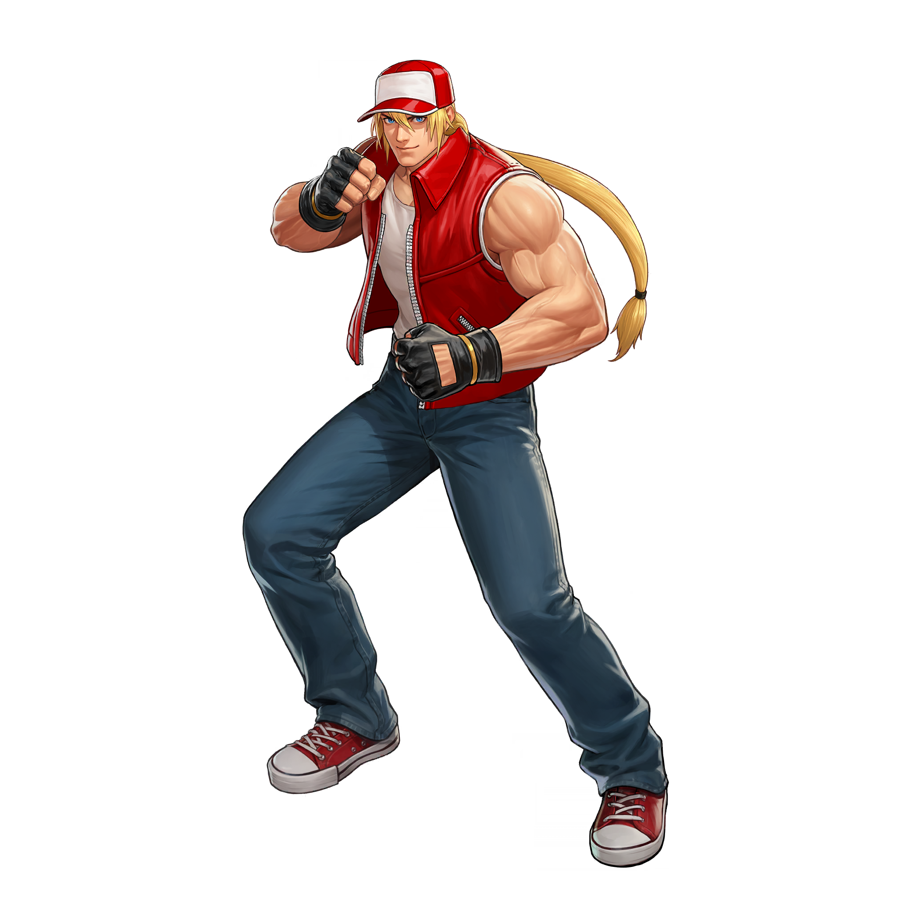
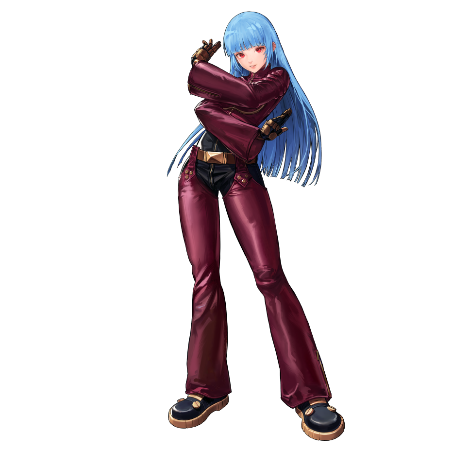
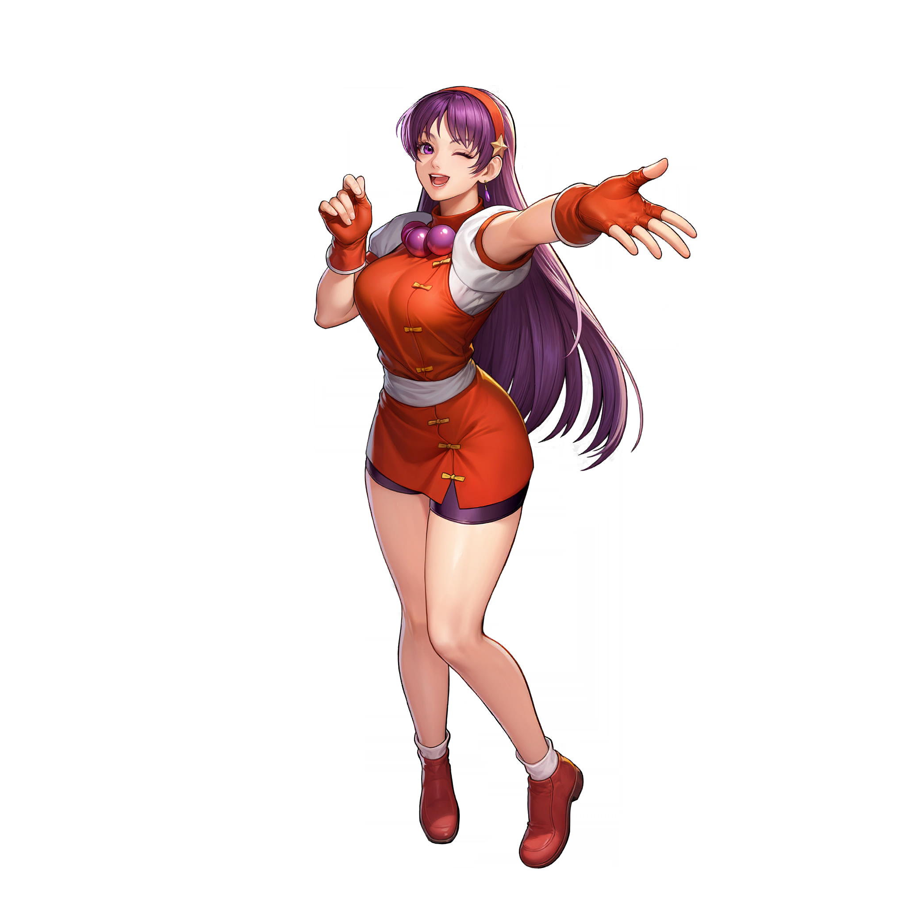
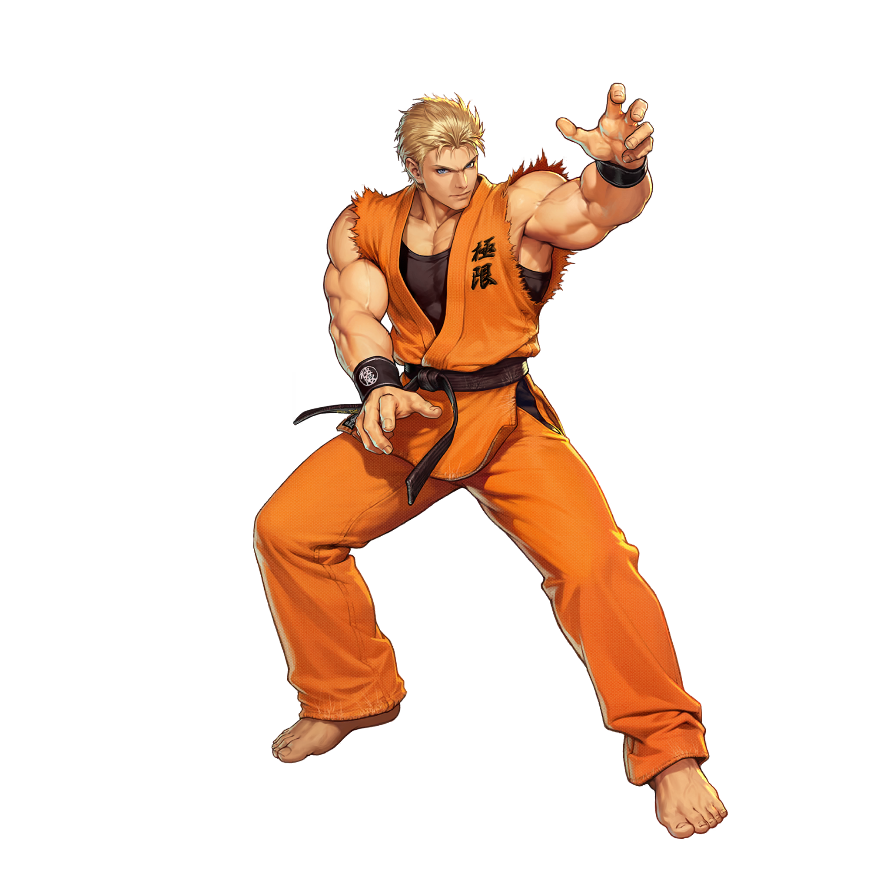
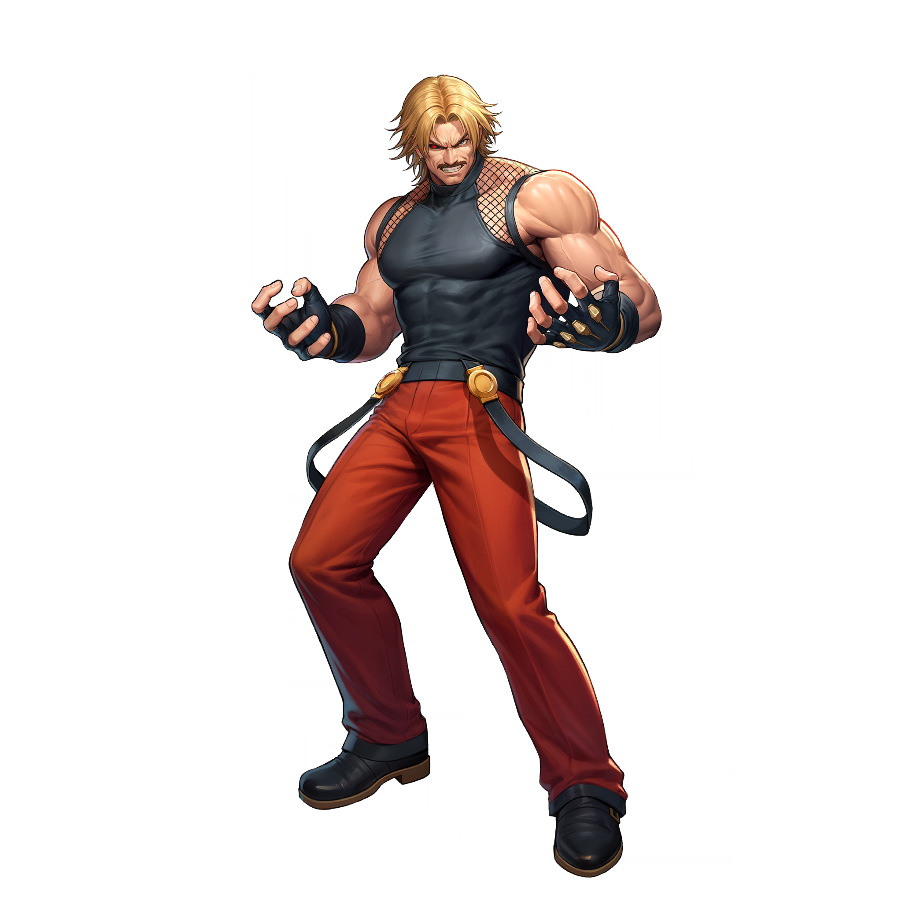
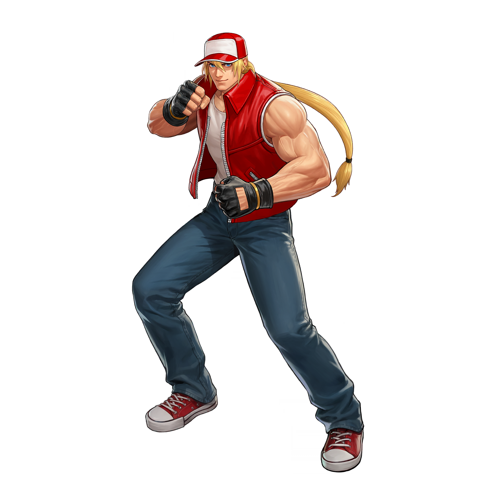
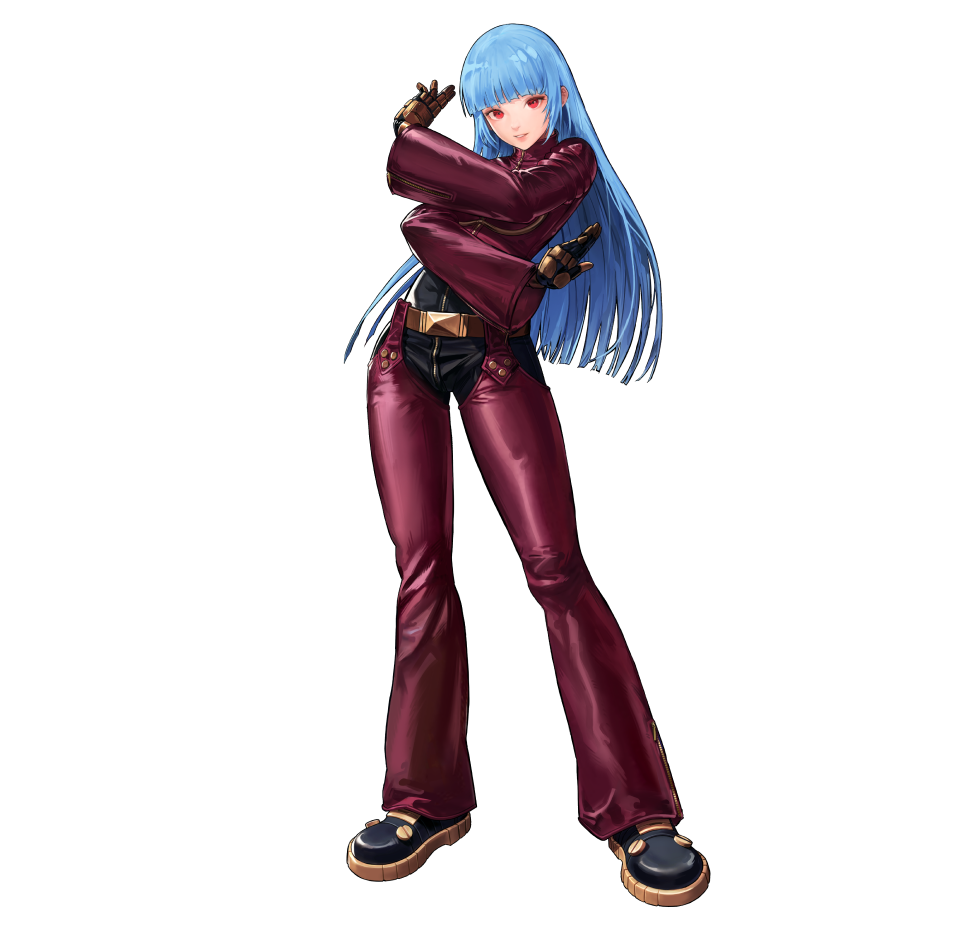
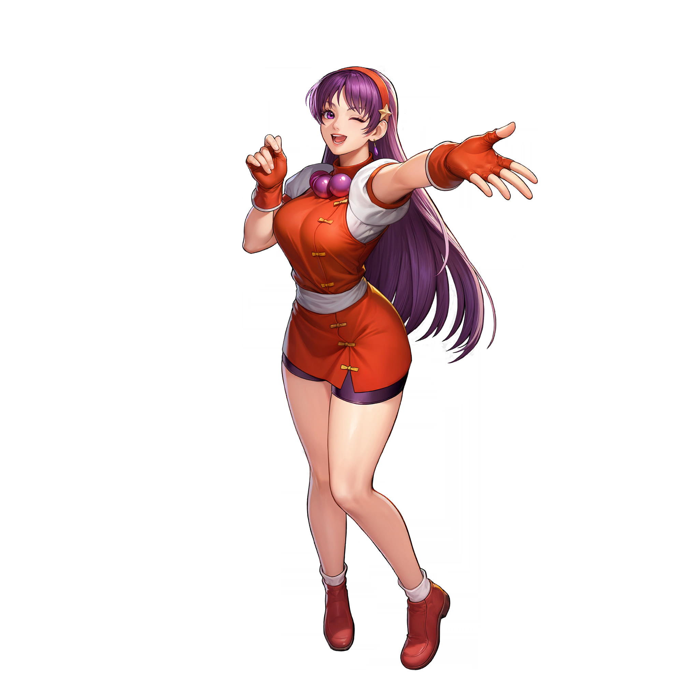
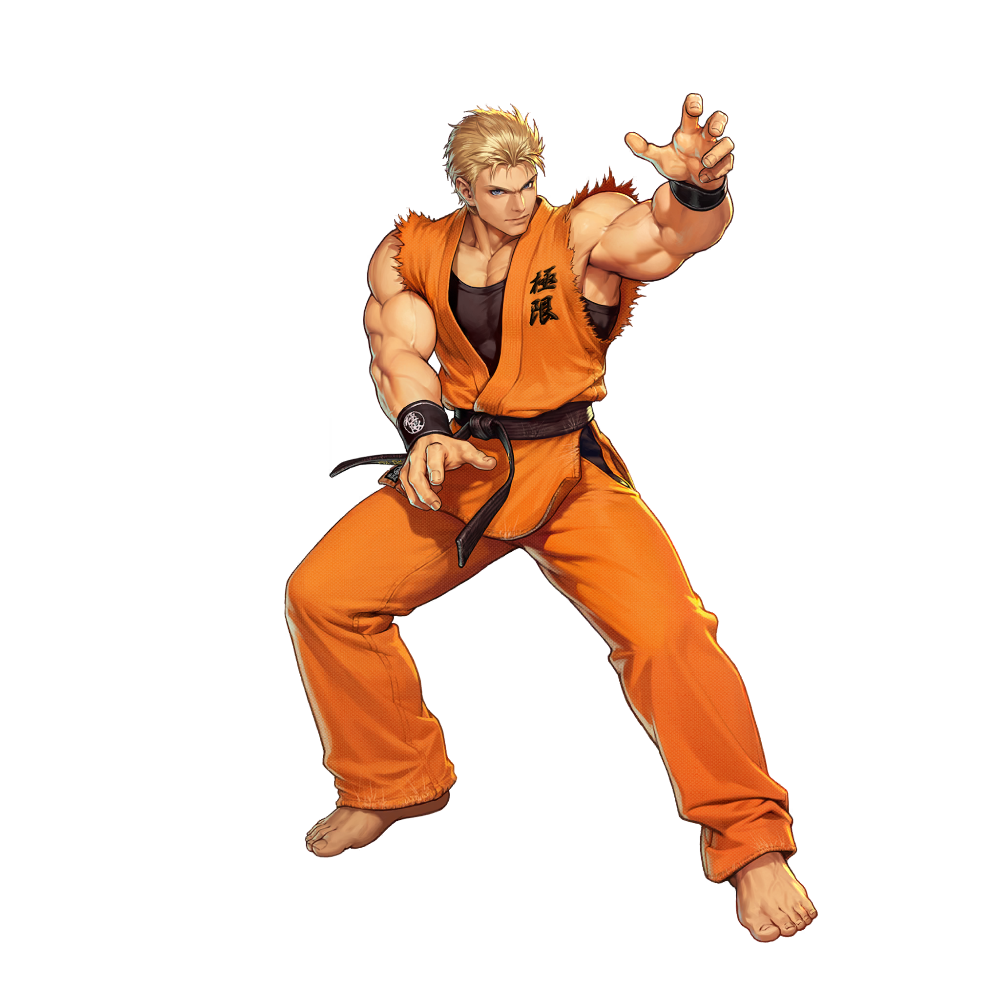
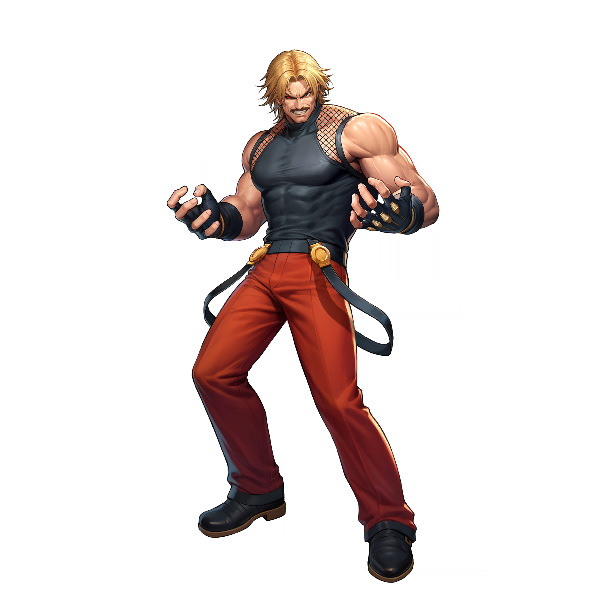

-
KYO KUSANAGI
Protagonista principal de la serie y heredero del clan Kusanagi. Posee el poder de las llamas sagradas y es rival eterno de Iori Yagami. Estudiante japonés con una personalidad relajada pero determinado cuando se trata de proteger el mundo.
-
IORI YAGAMI
Rival de Kyo y heredero del clan Yagami, maldecido con el "Riot of the Blood". Controla las llamas violetas y su personalidad es sombría y violenta. A pesar de su naturaleza, ocasionalmente ayuda a salvar el mundo.
-
LEONA HEIDERN
Soldado del Ikari Warriors adoptada por Heidern después de que perdiera el control de su sangre Orochi y matara a su familia. Es silenciosa, leal y experta en combate militar con habilidades de sangre Orochi.
-
MAI SHIRANUI
Kunoichi maestra del Ninjutsu Shiranui, enamorada de Andy Bogard. Es una luchadora hábil que utiliza técnicas de fuego y abanicos. Su personalidad es extrovertida y siempre busca la atención de Andy.
-
ASH CRIMSON
Protagonista enigmático de la Saga Ash, aparentemente egoísta pero con intenciones heroicas ocultas. Posee el poder de controlar las llamas verdes y su objetivo era evitar que Saiki destruyera las dimensiones temporales.
-
K DASH
Anti-héroe protagonista de la Saga NESTS, es un clon modificado de Kyo Kusanagi. Controla el fuego pero de manera artificial y lleva guantes especiales para controlarlo. Su personalidad es fría pero desarrolla lazos con sus compañeros.
-
SHERMIE
Miembro del equipo New Faces y uno de los Cuatro Reyes Celestiales de Orochi. Controla el poder del rayo y tiene una personalidad coqueta y juguetona. Forma parte del trío que busca revivir a Orochi.
-
TERRY BOGARD
Protagonista de Fatal Fury y luchador legendario de Southtown. Conocido por su icónico grito "Are you OK?" y su técnica Power Wave. Es un luchador callejero con gran corazón que protege a los débiles.
-
KULA DIAMOND
Anti-K' creada por NESTS con poderes criogénicos opuestos a los de K'. Inicialmente fría y sin emociones, gradualmente desarrolla humanidad y amistad. Su compañera es la androide Diana y controla el hielo.
-
ATHENA ASAMIYA
Estudiante de preparatoria con poderes psíquicos y descendiente de la diosa Athena. Es idol pop en Japón y siempre mantiene una actitud positiva y alegre. Lucha por la justicia y proteger a los inocentes.
-
RYO SAKAZAKI
Protagonista de Art of Fighting e hijo del maestro Takuma Sakazaki. Practica el Kyokugenryu Karate y es hermano mayor de Yuri. Su personalidad es seria y dedicada al entrenamiento, siempre buscando ser el mejor luchador.
-
RUGAL BERNSTEIN
Antagonista icónico de la serie, conocido como el "Rey de los Luchadores". Es un tirano despiadado que organiza torneos para demostrar su poder. Posee habilidades sobrehumanas y es responsable de muchos conflictos en la saga.